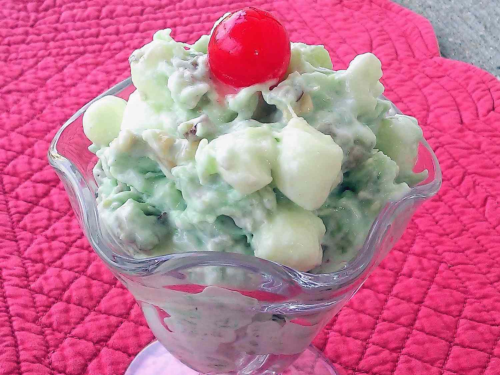

Home
Pistachio Salad

This pistachio salad is super simple to make with pistachio pudding mix,
whipped topping, and marshmallows for a classic dessert. This recipe can
be changed to suit your tastes by adding additional fruit or nuts.
Ingredients
- Canned pineapple
- Pistachio pudding mix
- Whipped topping
- Marshmallows
Steps
- Gather the ingredients.
-
Combine pineapple and dry pistachio pudding mix in a large bowl. Fold
in thawed whipped topping and marshmallows until well mixed.
- Refrigerate until chilled and serve.